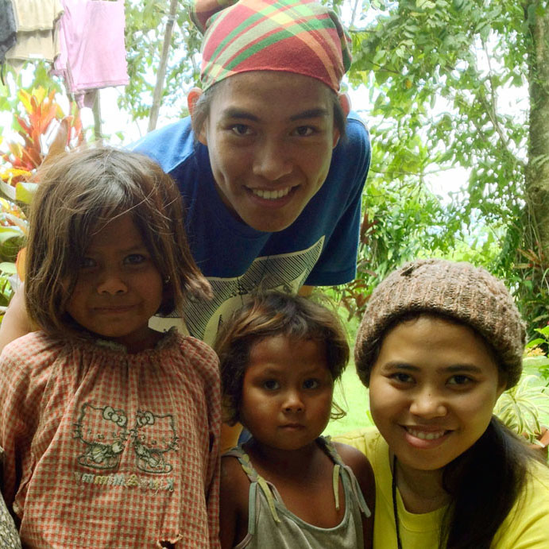
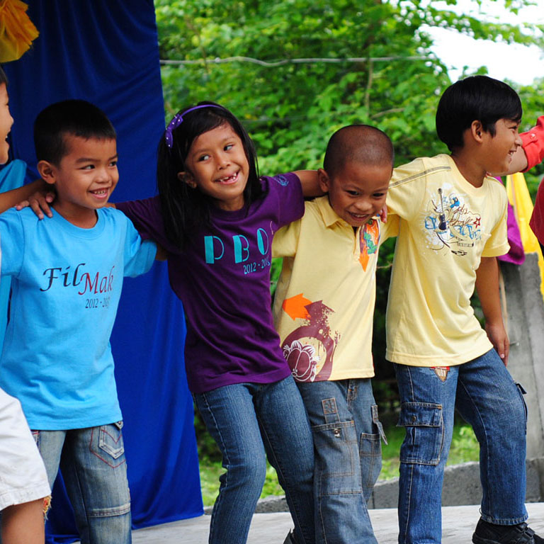
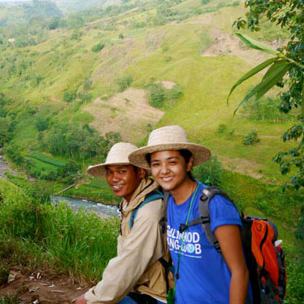

Vision
A just society that celebrates the fullness of life realized with the help of a community embodying Ignatian Spirituality.
Mission
We aim to form a community composed of volunteers,former volunteers and associates who nurture and live out the principles and values of Ignatian Spirituality embodied in and realized through their individual vocation.



Why we exist
Schools, non-government organizations, and parishes nationwide play an undeniably crucial role in the development of Philippine society. Unfortunately many of these organizations are lacking in resources to effectively fulfill their missions. Among the resources in scarcity are the human resources willing to take on the difficult roles of educators, development facilitators and parish workers.
What we do
JVP is able to directly address these social needs by providing well educated, highly dedicated individuals to fill these roles in development work. As a community, JVP is also able to provide the youth with the support and opportunity to engage in meaningful relationships that will fuel their drive to serve.